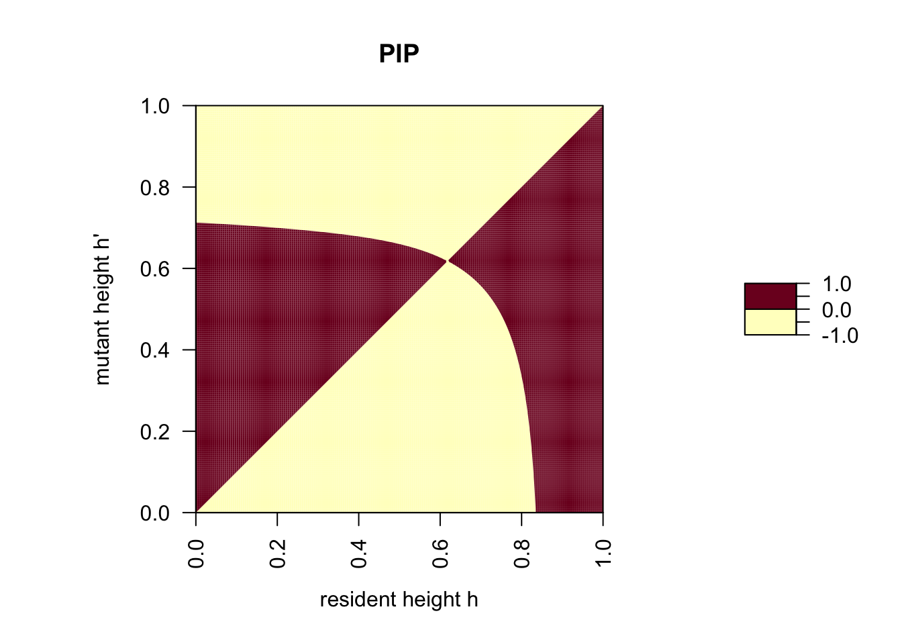

On this page, we explore the question whether two plants that differ in their height can coexist in the current model. On our way towards that goal we get to know Pairwise Invadability Plots (PIP), an important tool in modern Evolutionary Game Theory. As you will see, it seems that in the current model coexistence is not possible. On the next tab we therefore explore a modification of the plant hight game. In that modified model coexistence becomes possible.
We start by repeating the functions f(h) and g(h).
f <- function(h) {
1 - h^alpha
}
g <- function(h.1, h.2) {
P.L + (P.H - P.L)/(1 + exp(-beta*(h.1 - h.2)))
}And here the parameter values we used on the previous page.
alpha <- 3
beta <- 5
P.L <- 0.25
P.H <- 1Next, the definition of the payoff function.
w <- function(h.m, h.r) {
f(h.m) * g(h.m, h.r)
}We define the selective advantage s(h’, h) (or invasion fitness) of a mutant with height h’ in a population of plants with height h as the difference in payoff between a mutant when playing against a resident and a resident when playing againt itself:
s <- function(h.m, h.r) {
w(h.m, h.r) - w(h.r, h.r)
}A PIP is in fact simply a contour plot of the function s(h’, h) with a contour line at height s(h’, h)=0. By definition s(h, h) = 0 and therefore a PIP always has a contour line along the diagional (the 45-degree line). but as we will see, mutant h’ different from h can have zero-invasion fitness and these form a second, curved contour line in the PIP. Positive areas in the PIP correspond to combinations of mutants with trait value h’ and resident with trait value h where the mutant has positive invasion fitness and can therefore establish itself in the population.
PIP <- outer(seq(0, 1, 0.005), seq(0, 1, 0.005), s)
# the computes s(h', h) for all combinations of h' and h
par(pty="s")
filled.contour(t(PIP), levels = c(-1, 0, 1), main = "PIP", las = 2,
xlab = expression("resident height h"),
ylab = expression("mutant height h'"))
In order to determine whether a mutant h’ will replace the resident h or coexist with it, we plot the mirror image of a PIP (mirrored over the 45-degree line).
s.flipped.roles <- function(h.m, h.r) {
w(h.r, h.m) - w(h.m, h.m)
}
PIP.mirrored <- outer(seq(0, 1, 0.005), seq(0, 1, 0.005), s.flipped.roles)
par(pty="s")
filled.contour(t(PIP.mirrored), levels = c(-1, 0, 1), main = "PIP.mirrored", las = 2,
xlab = expression("height h"),
ylab = expression("height h'"))In order to determine if there are strategies (i.e., heights) that can coexist with each other we superimpose the PIP with its mirror image.
TEP <- ifelse(PIP > 0 & PIP.mirrored > 0, 1, ifelse(PIP < 0 & PIP.mirrored < 0, -1, 0))
par(pty="s")
filled.contour(t(TEP), levels = c(-1.5, -0.5, 0.5, 1.5), col = c("red", "blue", "green"),
plot.title={
title(main = "PIP and PIP.mirrored superimposed")
title(xlab=expression("height h"))
title(ylab=expression("height h'"))
abline(0, 1, lwd = 1)
})In this last plot the red area corresponds to combinations of heights h’ and h where neither can invade the other. In other words: whoever was first wins. In contrast, the blue areas correspond to combinations of heights where either the mutant or the resident wins. These results show that in the current model it is not possible for two plant species with differet heights to coexist: there always exists a unique heigh that will win against plants with any other height.
In fact there is quite a bit more one can read from this plot. These techniques involving PIPs are often referred to as Adaptive Dynamics or Evolutionary Invasion Analysis. If you want to learn more about this, Chapter 7 in the book by Kokko (2007) is a good starting point.